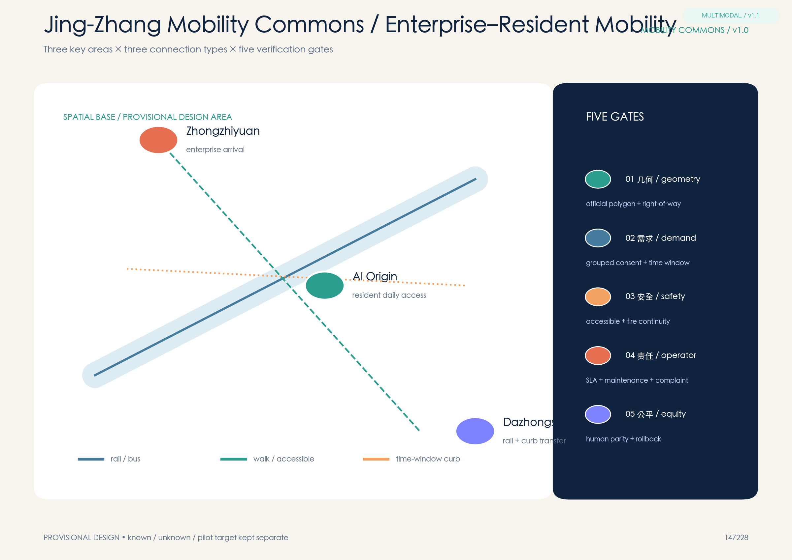
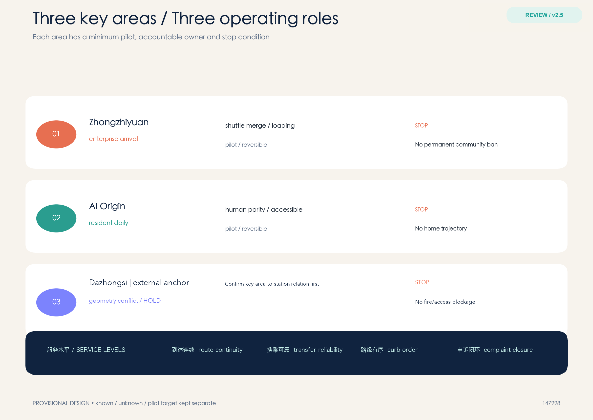
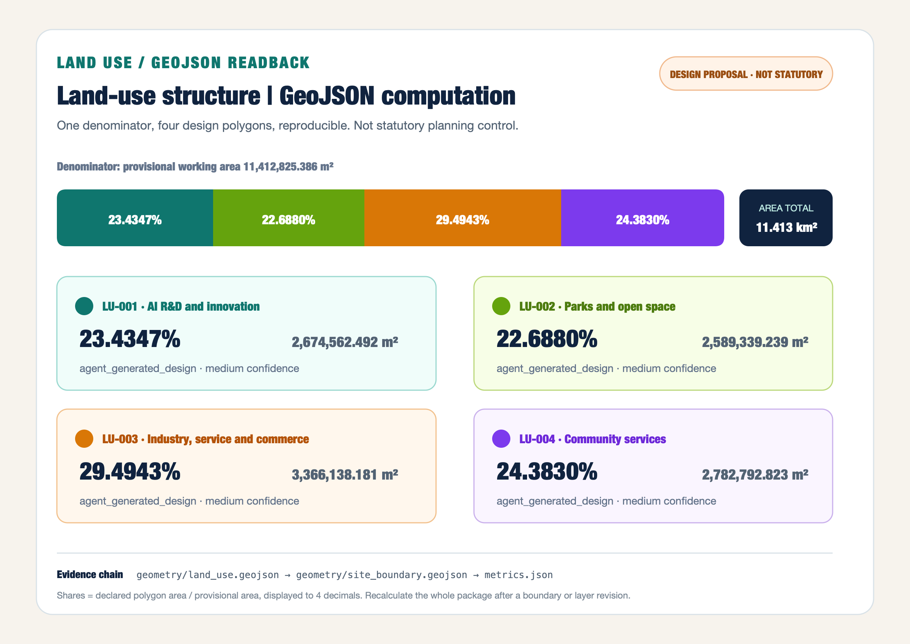
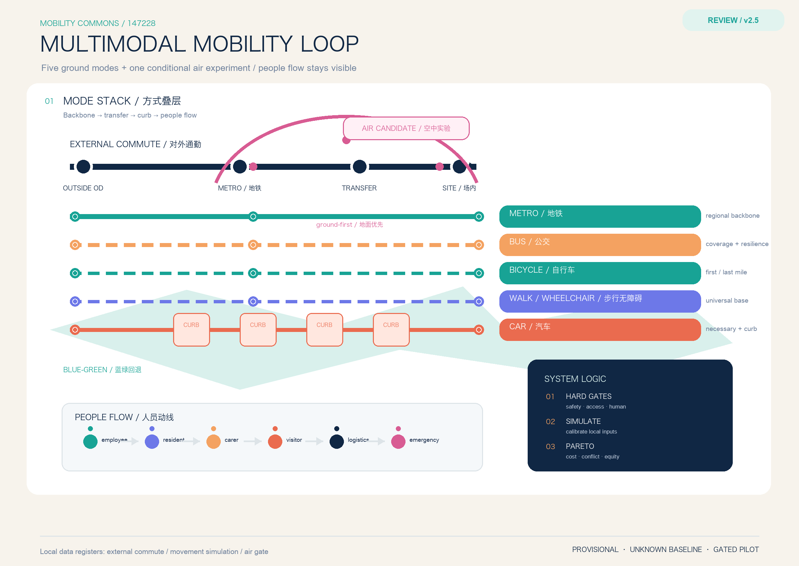
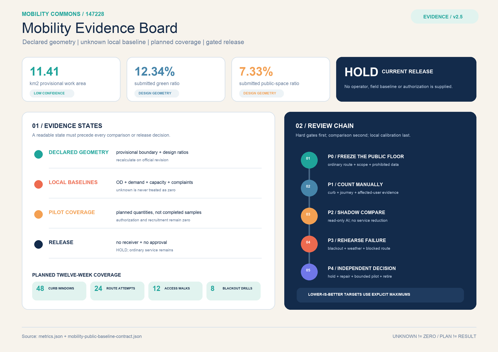
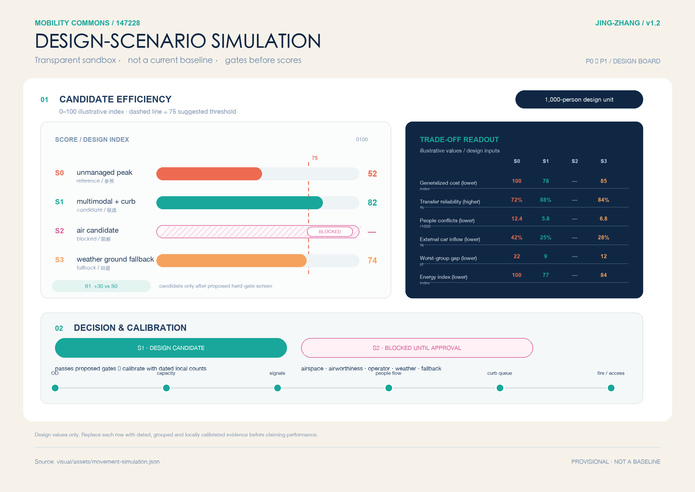

Three areas, one operating loop
PROVISIONALRail and bus remain the backbone. Enterprise arrival, resident daily access and rail/curb transfer are linked by three connection types and a time-windowed curb ledger.

Regional → overall → key areas
PROVISIONALThe same provisional geometry is shared by the regional research, overall design and three detailed pilots.
Operating roles
PROVISIONALZhongzhiyuan: enterprise arrival. AI Origin: resident daily access. Dazhongsi: rail and curb transfer.

Time-windowed land use
PROVISIONALDemand is grouped by service and time window; it is not a personal trajectory database.

Rail / bus / walking / curb
PROVISIONALFive curb states: open, booked, service, human-only and emergency. Every change has an owner and fallback.

Blue-green fallback
PROVISIONALShade, rest, rain fallback and night safety support the mobility chain; no health or flood claim is made.
Buildings as interfaces
PROVISIONALEntrances, waiting, bike parking, ramps and service counters are reversible interfaces; no FAR or height claim.
Register → pilot → review → stop/expand
PROVISIONALP0 baseline, P1 reversible pilots, P2 conditional expansion after professional review.

AI as a bounded service
PROVISIONALAggregate demand, explain conflicts, propose options and prepare rollback. Human routes remain equivalent.
Known / unknown / pilot target
PROVISIONALKnown values come from files. Demand, occupancy, access, conflicts and complaint time await field evidence.
Task coverage
PROVISIONALThree scales, three key areas, transport, municipal interfaces, AI scenarios, renewal, metrics and risk are cross-linked.
Self-check
PROVISIONALProvisional boundary disclosed. First-place package untouched. Recalculation gate remains open.
Sources
PROVISIONALOfficial transport plan, Haidian service tender, planning material, TDM research and curb-management research.
Assumptions
PROVISIONALNo local demand or performance is inferred from papers, OSM or conceptual geometry.
Multimodal network / external commuting / simulation
conditional gatePeople flow: employees, residents, carers, visitors, logistics, maintenance and emergency responders receive grouped OD; external commuting crosses the provisional boundary and records mode, transfer, park-and-ride and time window.
Multimodal simulation: metro / bus / bicycle / car / walking inputs are calibrated separately; safety, fire, accessibility, public-transport protection and human-service gates come before comparing system efficiency, generalized cost, conflicts and worst-group gaps.
Air mobility experiment: ground-first, low-frequency, human-supervised and weather-cancellable only; no route, vertiport or permit is claimed.
Design-scenario simulation / not a baseline
transparent sandboxA normalized 1,000-person design unit compares an unmanaged peak, multimodal curb coordination, a ground fallback and an air candidate blocked by regulatory gates. S1 is only a design candidate after the proposed gates; it is not current Haidian performance or a final optimum.
